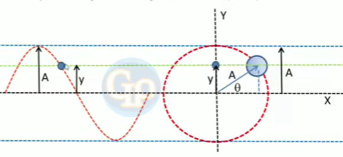

Gerak Harmonik Sederhana (Getaran Selaras)
PENGERTIAN
Gerak Harmonik dapat didefinisikan sebagai gerak benda secara bolak balik yang melewati titik setimbangnya. Gerak Harmonik Sederhana dapat didefinisikan sebagai gerak harmonik yang tidak dipengaruhi gaya gesek sehingga seluruh faktor yang mempengaruhi gerak harmonik sederhana tidak berubah. Sehingga benda yang diberi simpangan akan bergerak bolak-balik secara terus menerus tanpa henti. Untuk membuat benda mampu bergerak secara harmonik maka diperlukan gaya yang menarik benda tersebut ke arah posisi setimbang. Perhatikan gambar berikut:

Gambar 5 Benda elastis yang memiliki simpangan berlawanan arah dengan gaya pembalik.
Pada gambar 5, benda dari posisi setimbang diberikan simpangan dengan arah y. Maka gaya pembaliknya adalah \( F \) yang memilki arah berlawanan dengan arah simpangannya. Secara matematis persamaan dari gambar diatas dapat dituliskan sebagai berikut.
\( \vec{F} = \ - k \ . {y} \)
Persamaan 2 Hubungan gaya dengan simpangan
- Dengan
- \( \vec{F} \) adalah gaya yang menarik benda
- \( k \) adalah sebuah konstanta
- \( {y} \) adalah simpangan benda dari posisi setimbang
Pada gerak harmonik, arah gaya selalu berlawanan dengan arah simpangannya ditunjukkan dengan tanda negatif pada persamaan diatas. Sebuah benda dapat bergerak secara harmonik jika gaya pembaliknya memiliki besar yang sama dengan gaya simpangannya.
Contoh 1
Seorang peneliti ingin mengukur elastisitas suatu bahan. Dia memiliki seutas tali elastis dengan panjang awal 1 meter. Ketika dia menggantung beban 10 kg pada ujung tali, tali itu meregang hingga panjangnya 1,1 meter. Lalu, jika dia menggantung beban tambahan 5 kg pada tali yang sudah diberi beban sebelumnya, berapa panjang tali itu sekarang?
(g= 10 \( m/ s^2 \))
Diketahui
\( m_1 \) = 10 kg
\( m_2 \) = 5 kg
\( L_0 \) = 1 m
\( L_1 \) = 1,1 m
Ditanya: Panjang tali setelah diberi beban tambahan (\( L_2 \))
Jawab:Diketahui bahwa ketika beban 10 kg diterapkan pada tali, tali meregang hingga 1,1 meter dari panjang awal 1 meter. Ini adalah perubahan panjangnya:
\( \Delta L_1 \) = 1,1 - 1 = 0.1 m
Sehingga persamaan gerak benda sebelum diberi beban tambahan \( ( \vec{F_1} ) \) yaitu
\( k . \Delta L_1 = \vec{F_1} \)
\( k . 0,1 = m . g \)
\(k \) . 0,1 = 10 kg . 10 \( m/ s^2 \)
Selanjutnya, perubahan panjang tali ketika beban tambahan 5 kg ditentukan dengan menggunaan persamaan berikut:\( \vec{F_2} = k . \Delta L_2 \)
dengan \( \vec{F_2} = m_2 . g \)
kita tahu bahwa \( \vec{F_2}\) = 5 kg . 10 \( m/ s^2 \) , sehingga
5 kg . 10 \( m/ s^2 \) = \(k . \Delta L_2 \)
Sekarang kita memiliki dua persamaan yaitu
(1) \(k \) . 0,1 = 10 kg . 10 \( m/ s^2 \)
(2) \(k . \Delta L_2 \) = 5 kg . 10 \( m/ s^2 \)
Dari persamaan pertama, kita dapat menghitung nilai \(k \)
Sekarang, kita dapat menggunakan nilai \(k \) untuk menghitung \( \Delta L_2 \) pada persamaan ke-2
\( \Delta L_2 \) = \( \frac {5 \ \ kg . \ 10 \ \ m/ s^2 }{1000 N/m }\) = 0,05 \(m \)
Jadi, ketika beban tambahan 5 kg diterapkan pada tali yang sudah diberi beban sebelumnya, panjang tali itu akan meregang sekitar 5 cm. Panjang tali setelah beban tambahan adalah:
1,1 + 0,5 = 1,15 \(m \)
Jadi, panjang tali setelah beban tambahan adalah 1,15 \(m \)
Contoh 2
Andi adalah seorang ilmuwan yang sedang melakukan eksperimen dengan pegas. Dia memiliki dua pegas identik yang terbuat dari bahan yang sama. Dia ingin menentukan konstanta elastisitas (k) kedua pegas tersebut. Andi memiliki sebuah beban yang dia tahu memiliki massa 2 kg.
Dia menggantung beban tersebut pada pegas pertama dan mengamati perubahan panjangnya. Kemudian, dia menggantung beban yang sama pada pegas kedua dan juga mengamati perubahan panjangnya. Setelah melakukan pengukuran, Andi menemukan bahwa pegas pertama meregang 0,5 meter dan pegas kedua meregang 0,8 meter ketika beban yang sama digantung padanya.
Pertanyaannya adalah: Berapakah konstanta dari masing-masing pegas tersebut?
Untuk menentukan konstanta elastisitas (k) dari masing-masing pegas, kita menggunakan hukum Hooke:
F = -kx
Ada dua kasus:
Kasus 1:
Pegas pertama meregang 0,5 meter saat beban 2 kg digantung padanya.
Mari hitung k1 untuk pegas pertama:
k1 = F / x1
Kita perlu menghitung gaya yang bekerja pada pegas pertama. Gaya ini adalah berat beban (W) yang dapat dihitung sebagai massa (m) dikalikan dengan percepatan gravitasi (g):
W = mg
W = (2 kg)(10 m/s²) = 20 N
Sekarang, kita dapat menghitung k1:
k1 = 20 N / 0,5 m = 40 N/m
Kasus 2:
Pegas kedua meregang 0,8 meter saat beban yang sama (2 kg) digantung padanya.
Mari hitung k2 untuk pegas kedua:
k2 = F / x2
Sekarang, kita dapat menghitung k2:
k2 = 20 N / 0,8 m = 25 N/m
Jadi, konstanta elastisitas k1 dari pegas pertama adalah 40 N/m dan konstanta elastisitas k2 dari pegas kedua adalah 25 N/m.
Hubungan Gerak Harmonik Sederhana Dengan Gerak Melingkar Beraturan
.gif)
Gambar 6 Gerak Harmonik Sederhana memiliki pola gelombang yang sama dengan gerak melingkar beraturan.
Gerak Harmonik Sederhana dapat dipandang sebagai suatu komponen gerak melingkar atau dapat dikatakan bahwa sebuah benda yang melakukan gerak melingkar beraturan merupakan proyeksi Gerak Harmonik Sederhana. Dapat dilihat pada animasi diatas bahwa benda yang bergerak secara naik turun melewati titik setimbangnya memiliki pola gelombang yang sama dengan benda yang bergerak melingkar beraturan. Gerak Harmonik Sederhana yang ditinjau melalui proyeksi gerak melingkar beraturan memberikan kemudahan untuk mengartikan besaran-besaran yang mempengaruhi Gerak Harmonik Sederhana. Kedua gerak tersebut memiliki karakteristik yang sama yaitu pola gerakannya membentuk fungsi sinus ataupun cosinus. Pembahasan mengenai besaran-besaran yang terdapat pada Gerak Harmonik Sederhana dapat dilihat pada penjabaran berikutnya.
Besaran Utama pada Gerak Harmonik Sederhana
Beberapa besaran yang terdapat dalam Gerak Harmonik Sederhana meliputi frekuensi, perioda, amplitudo getaran, simpangan getaran, kecepatan sudut, fase getaran, dan sudut fase getaran.
a. Frekuensi (f)
Frekuensi pada Gerak Harmonik Sederhana diukur dalam hertz (Hz) dan mengacu pada jumlah lengkap siklus gerakan (siklus penuh dari satu arah ke arah yang berlawanan dan kembali) yang dilakukan benda dalam satu detik atau satu waktu. Frekuensi berkaitan dengan dua parameter penting lainnya dalam Gerak Harmonik Sederhana, yaitu jumlah getaran dan periode pegas. Rumus dari frekuensi yaitu:
\( f = \frac{n}{t} \)
Persamaan 3 persamaan frekuensi pada Gerak Harmonik Sederhana
Keterangan:
\( f\) = frekuensi (Hz)
n = banyaknya getaran
t = waktu (s)
\( f\) = frekuensi (Hz)
n = banyaknya getaran
t = waktu (s)
b. Perioda (T)
Periode dalam Gerak Harmonik Sederhana adalah parameter penting yang menggambarkan karakteristik dasar dari gerakan ini. Gerak harmonik sederhana adalah jenis gerakan osilasi atau getaran yang terjadi pada sistem yang kembali ke posisi keseimbangan setelah diberikan gangguan. Periode mengukur waktu yang diperlukan oleh benda atau sistem untuk menyelesaikan satu siklus gerakan penuh, yaitu perjalanan dari satu arah gerakan ke arah gerakan yang berlawanan dan kembali lagi ke posisi awal. Rumus dari perioda yaitu:
\( T = \frac{t}{n} \)
Persamaan 4 persamaan perioda pada Gerak Harmonik Sederhana
Keterangan:
\( T\) = perioda (s)
t = waktu (s)
n = banyaknya getaran
\( T\) = perioda (s)
t = waktu (s)
n = banyaknya getaran
Contoh 1
Ketika melewati jalan berlubang, shockbreaker sepeda motor bergetar 8 kali dalam 10 detik. Tentukan :
a. Periode getaran pegas shockbreaker
b. Frekuensi getaran pegas shockbreaker
Diketahui
\( n \) = 8
\( t \) = 10 detik
Ditanya: a. Periode getaran pegas shockbreaker
Jawab:
\( T \ \) \( = \frac{t}{n} \)
\( T \ \) \( = \frac{10}{8} \)
\( T = 1,25 \) s
Ditanya: b. Frekuensi getaran pegas shockbreaker
Jawab:
\( f = \frac{n}{t} \)
\( f = \frac{8}{10} \)
\( f = 0,8 \) Hz
c. Amplitudo Getaran (A)
Amplitudo dalam Gerak Harmonik Sederhana adalah salah satu parameter penting yang menggambarkan karakteristik gerakan osilasi atau getaran tersebut. Amplitudo adalah besaran yang mengukur jarak maksimum benda dari posisi keseimbangannya
Berdasarkan gambar 7, amplitudo benda dituliskan pada -A dan +A. Benda yang digantung pada pegas tersebut bergerak naik turun, amplitudo mengukur sejauh mana benda bergerak dari posisi keseimbangannya. Ketika benda bergerak ke atas dari posisi keseimbangan, amplitudo memiliki nilai positif. Ketika benda bergerak ke bawah dari posisi keseimbangan, amplitudo memiliki nilai negatif. Dengan demikian, amplitudo adalah besaran yang mengukur besarnya simpangan maksimum benda dalam Gerak Harmonik Sederhana dan dapat memiliki nilai positif atau negatif tergantung pada arah gerakan benda tersebut. Besaran ini selalu diukur dari posisi keseimbangan.
d. Kecepatan Sudut ( \( {\omega} \) = omega )
Kecepatan sudut dalam Gerak Harmonik Sederhana mengacu pada kecepatan benda bergerak mengelilingi posisi keseimbangan dalam gerakan osilasi atau getaran tersebut. Kecepatan sudut ( \( {\omega}\) ) memiliki hubungan terbalik dengan periode (T) Gerak Harmonik Sederhana. Periode adalah waktu yang dibutuhkan oleh benda atau sistem untuk menyelesaikan satu siklus gerakan penuh, sedangkan kecepatan sudut adalah berapa banyak sudut yang ditempuh oleh benda dalam satu waktu. Hubungannya dapat dijelaskan oleh rumus berikut:
\( {\omega} \ \) = \( \frac{2 \pi}{T} \)
atau
\( {\omega} = {2 \pi}{f} \)
Persamaan 5 Persamaan kecepatan sudut pada Gerak Harmonik Sederhana
Keterangan:
\( {\omega} \) = kecepatan sudut (rad/s)
T = perioda (s)
f = frekuensi (Hz)
\( {\omega} \) = kecepatan sudut (rad/s)
T = perioda (s)
f = frekuensi (Hz)
e. Sudut Fase dan Fase Getaran
Untuk mengetahui arti fisis dari besaran sudut fase ( \( \theta \) ) dan fase getaran ( \( \psi \) ) kita perlu meninjau gerak harmonik sebagai proyeksi gerak melingkar beraturan yang memuat fungsi sinus. Perhatikan gambar dibawah ini:

Gambar 8 Benda bergerak harmonik sederhana yang posisinya ditinjau dalam fungsi sinus dan gerak melingkar.
Gambar 8 menunjukkan sebuah benda yang berada pada sebuah titik yang berjarak \( y \) dari sumbu x. Besar sudut yang dibentuk benda terhadap sumbu x adalah \( \theta \) dan jari-jari lingkaran yaitu A. Maka dapat ditentukan nilai \( y \) yaitu \( y = A \ sin \ \theta \). \( \theta \) disebut sudut fase yang besarnya \( \omega \ t \ + \theta_0 \) (hal tersebut linear dengan persamaan jarak pada gerak lurus \( s = vt + s_0 \)). Sudut fase digunakan untuk mengidentifikasi dimana benda berada dalam gerakannya terhadap posisi keseimbangan atau pusat gerakan. Secara matematis dituliskan sebagai berikut
\( \theta = {\omega} \ {t } + {\theta_0} \)
\( \theta \) = \( \frac{2 \pi }{T} \) \( t \) + \( \theta_0 \)
\( \theta = {2 \pi} \) \( (\frac {t}{T} + \frac {\theta_0}{2 \pi}) \)
\( \theta = {2 \pi} \ {\psi}\)
Persamaan 6 Persamaan sudut fase pada Gerak Harmonik Sederhana
Keterangan:
\( \theta \) = sudut fase getaran
\( {\omega} \) = kecepatan sudut (rad/s)
t = waktu sesaat (s)
\( \theta_0 \) = Sudut awal fase getaran
T = waktu dalam satu getaran penuh (s)
\( \psi \) = Fase getaran
\( \theta \) = sudut fase getaran
\( {\omega} \) = kecepatan sudut (rad/s)
t = waktu sesaat (s)
\( \theta_0 \) = Sudut awal fase getaran
T = waktu dalam satu getaran penuh (s)
\( \psi \) = Fase getaran
Besaran \( \psi \) disebut fase getaran. Fase getaran digunakan untuk mengetahui fase benda dalam gerakannya terkait dengan posisi keseimbangan atau titik awal gerakan tersebut. Fase getaran didapatkan melalui perbandingan antara waktu sesaat benda (t) dan waktu yang diperlukan untuk bergerak satu putaran penuh (T) Rumus dari fase getaran yaitu:
\( \psi = \) \( \frac{\theta}{2 \pi} = (\frac {t}{T} + \frac {\theta_0}{2 \pi}) \)
Persamaan 7 Persamaan fase getaran dalam Gerak Harmonik Sederhana
Keterangan:
\( \psi \) = Fase getaran
t = waktu (s)
\( \theta_0 \) = Sudut awal fase getaran
T = waktu dalam satu getaran penuh (s)
\( \theta \) = sudut fase getaran
\( \psi \) = Fase getaran
t = waktu (s)
\( \theta_0 \) = Sudut awal fase getaran
T = waktu dalam satu getaran penuh (s)
\( \theta \) = sudut fase getaran
Untuk lebih memahami tentang sudut fase dan fase getaran perhatikan ilustrasi Gerak Harmonik Sederhana yang diproyeksikan terhadap gerak melingkar beraturan berikut ini:
Gambar 9 Fase dan sudut fase gerak harmonik sederhana.
Mari kita lihat komponen sudut fase dan fase pada gambar diatas
Titik a
\( \theta = 0°\)
\( \psi = 0 \ fase\)
Titik b
\( \theta = 45°\)
\( \psi = 1/8 \ fase\)
Titik c
\( \theta = 90°\)
\( \psi = 2/8 \ fase\)
Titik d
\( \theta = 135°\)
\( \psi = 3/8 \ fase\)
titik e
\( \theta = 180°\)
\( \psi = 4/8 \ fase\)
titik f
\( \theta = 225°\)
\( \psi = 5/8 \ fase\)
titik g
\( \theta = 270°\)
\( \psi = 6/8 \ fase\)
titik h
\( \theta = 315°\)
\( \psi = 7/8 \ fase\)
Titik a
\( \theta = 360°\)
\( \psi = 1 \ fase\)
Tabel 1 Penjelasan sudut fase dan fase gerak pada gambar 9
Contoh 1
Sebuah partikel melakukan Gerak Harmonik Sederhana dangan simpangan y = 0,2 sin 0,25πt. Dimana y dan A berturut - turut adalah simpangan, amplitudo, dan t dalam satuan SI. Tentukan fase getaran partikel tersebut terhadap titik setimbangnya saat t = 2 detik
diketahui,
y = 0,2 sin 0,25πt
t = 2 detik
ditanya
Fase getaran (\( \psi \)) saat t = 2 ?
Jawab:
Untuk mengetahui fase getaran, diperlukan nilai periode partikel. Nilai periode dapat diketahui dengan cara sebagai berikut: \( \omega = \frac{2 \pi}{T} \)
Y = A sin \( \omega \ t \)
Y = 0,2 sin 0,25πt
\( \omega = 0,25 \pi \)
\( 0,25 \ \pi = \) \(\frac {2 \pi}{T}\)
\( T = \) \(\frac {2 \pi}{0,25 \pi}\)
\( T = 8 \) sekon
Besar fase dapat diketahui dengan membandingkan antara waktu (t) dengan periode (T)\( \psi = \frac {t}{T}\)
\( \psi = \frac {2}{8}\)
\( \psi = \frac {1}{4}\)
Simpangan pada Gerak Harmonik Sederhana
a. Simpangan (Y)
Simpangan gerak harmonik adalah jarak antara posisi benda pada saat tertentu dengan posisi kesetimbangannya. Pada Gerak Harmonik Sederhana simpangan benda diukur dari titik kesetimbangan atau posisi awal benda mulai bergerak bolak-balik. Simpangan dalam gerak Gerak Harmonik Sederhana berubah-ubah seiring dengan waktu. Dalam satu periode getaran, simpangan benda mengalami perubahan dari simpangan maksimum hingga simpangan minimum kembali lagi kesimpangan maksimum.
Gambar 8 Benda bergerak harmonik sederhana yang posisinya ditinjau dalam fungsi sinus dan gerak melingkar.
Gambar diatas menunjukkan benda yang memiliki simpangan dengan besar simpangan tersebut yaitu Y. Persamaan simpangan y ditinjau dari titik setimbangnya memenuhi :
\( y (t) = A \ sin\ ({ {\omega} t} + { \theta_0} ) \)
Persamaan 8 Persamaan simpangan Gerak Harmonik Sederhana
Keterangan:
y = simpangan getaran
A = Amplitudo
t = waktu (s)
\( \theta_0 \) = Sudut awal fase getaran
\( {\omega} \) = kecepatan sudut getaran (rad/s)
y = simpangan getaran
A = Amplitudo
t = waktu (s)
\( \theta_0 \) = Sudut awal fase getaran
\( {\omega} \) = kecepatan sudut getaran (rad/s)
Persamaan simpangan diatas merupakan persamaan simpangan yang ditinjau dari sumbu y. Untuk dapat menentukan simpangan yang ditinjau dari sumbu x perhatikan gambar berikut:
Gambar 10 Posisi benda gerak harmonik ditinjau dari sumbu x
Titik P merupakan proyeksi titik Q terhadap sumbu x sehingga besarnya jarak antara pusat keseimbangan dan titik P adalah x(t) yang besarnya \( x(t) = A \ cos \ ( {\omega} \ t + \theta_0) \)
b. Kecepatan Gerak Harmonik Sederhana Saat Simpangannya y ( \( v_y \) )
Kecepatan menggambarkan perubahan posisi suatu benda per satuan waktu. Dalam Gerak Harmonik Sederhana, kecepatan menggambarkan seberapa cepat benda bergerak pada suatu titik waktu tertentu disekitar titik kesetimbangan. Pada Gerak Harmonik Sederhana, kecepatan benda pada titik waktu tertentu dapat dihitung dengaan menggunakan turunan waktu dari persamaan simpangan benda, secara matematis dituliskan sebagai berikut:
\( \vec {v_y} \) = \(\frac{d_y}{d_t} \)
\( \vec {v_y} \) = \(\frac{d}{d_t}\) \( (A \ sin ({ {\omega} t} \ + \ { \theta_0}) ) \)
\( \vec {v_y} = { {\omega}}\ A\ cos ({ {\omega} t} + { \theta_0}) \)
kecepatan yang ditinjau dari sumbu x yaitu:
\( \vec {v_x} = - { {\omega}}\ A\ sin ({ {\omega} t} + { \theta_0}) \)
Persamaan 9 Persamaan kecepatan pada Gerak Harmonik Sederhana
Hubungan antar kecepatan dan simpangan memenuhi
\( \vec {v_y} = { {\omega}} \ \sqrt(A^2-y^2) \)
atau
\( \vec {v_x} = { {\omega}} \ \sqrt(A^2-x^2) \)
Persamaan 10 Hubungan kecepatan sudut dengan simpangan
Keterangan:
\( \vec {v_y}\) = kecepatan getaran saat simpangan y (m/s)
y = simpangan getaran
t = waktu (s)
\( \theta_0 \) = Sudut awal fase getaran
\( {\omega} \) = kecepatan sudut getaran
\( \vec {v_y}\) = kecepatan getaran saat simpangan y (m/s)
y = simpangan getaran
t = waktu (s)
\( \theta_0 \) = Sudut awal fase getaran
\( {\omega} \) = kecepatan sudut getaran
c. Percepatan Gerak Harmonik Sederhana Saat Simpangannya Y (vY)
Percepatan menggambarkan perubahan kecepatan suatu benda persatuan waktu. Dalam Gerak Harmonik Sederhana, percepatan menggambarkan seberapa cepat kecepatan benda berubah pada waktu tertentu disekitar titik kesetimbangan. Pada Gerak Harmonik Sederhana, percepatan dapat dihitung dengan menggunakan turunan waktu dari persamaan kecepatan. Secara matematis percepatan dituliskan sebagai berikut:
\( \vec {a_y} \) = \( \frac{d_v}{d_t} \)
\( \vec {a_y} \) = \( \frac{d}{d_t} \) \(( \ { {\omega}} \ A \ cos ({ {\omega} t}\ +\ { \theta_0}) ) \)
\( \vec {a_y} = - { {\omega} ^2}\ A\ sin ({ {\omega} t} + { \theta_0}) \)
\( \vec {a_y} = - { {\omega} ^2}\ y \)
atau
\( \vec {a_x} = - { {\omega} ^2}\ x \)
Persamaan 11 Persamaan percepatan pada Gerak Harmonik Sederhana
Keterangan:
\( \vec {a_y}\) = percepatan getaran saat simpangan y( \( \frac {m}{s^2}\))
y = simpangan getaran
t = waktu (s)
\( \theta_0 \) = Sudut awal fase getaran
\( {\omega} \) = kecepatan sudut getaran
\( \vec {a_y}\) = percepatan getaran saat simpangan y( \( \frac {m}{s^2}\))
y = simpangan getaran
t = waktu (s)
\( \theta_0 \) = Sudut awal fase getaran
\( {\omega} \) = kecepatan sudut getaran
Kecepatan memiliki arah yang berlawanan dengan percepatan. Sehingga kecepatan benda berkurang seiring waktu sampai benda berhenti dan melakukan getaran dengan arah yang sebaliknya.
Sebuah partikel bergerak harmonik dengan amplitudo 13 cm dan periodenya \( 0,1 \pi\ s \).
a. Berapakah kecepatan partikel tersebut saat simpangannya 5 cm?
b. Berapakah percepatan benda tersebut saat simpangannya 10cm?
a.
Diketahui:
A = 13 cm = \( 13 \ . \ 10^{-2} \ m \)
T = \( 0,1 \ \pi \ s \)
Y = 5 cm = \( 5 \ . \ 10^{-2} \ m \)
Kecepatan benda saat simpangan 5 cm dapat dihitung menggunakan persaamaan\(v = {\omega} \sqrt{(A^2 - Y^2)} \)
Sebelum itu kita hitung dulu nilai \( {\omega} \) menggunakan persamaan \( {\omega} = \frac {2 \pi}{T}\)
\( {\omega} = \frac {2 \pi}{0,1 \pi \ s}\)
\( {\omega} = 20 \ rad/s \)
Sehingga kecepatan benda tersebut saat simpangan 5 cm adalah\( v = { {\omega}} \ \sqrt{(A^2-Y^2)} \)
\( v = 20 \ \sqrt {( 13 \ . \ 10^{-2} )^2-( 5 \ . \ 10^{-2} )^2} \)
\( v = 20 \ \sqrt { 169 \ . \ 10^{-4} - 25 \ . \ 10^{-4}} \)
\( v = 20 \ \sqrt { 144 \ . \ 10^{-4}} \)
\( v = 20 \ . \ 12 \ . \ 10^{-2} \)
\( v = 240 . \ 10^{-2} \)
\( v = 2,4 \ m/s \)
b.
Percepatan benda dapat kita hitung menggunakan persamaan \( a = - { {\omega} ^2}\ Y \)
diketahui:
\( {\omega} = 20 \ rad/s \)
\( {\omega} = 20 \ rad/s \)
Y = 10 cm = \( 10 \ . \ 10^{-2} \ m \)
Sehingga percepatan benda tersebut saat simpangan 10 cm adalah\( a = - 20^{2}\ . \ (10 \ . \ 10^{-2}) \)
\( a = 400 \ . \ (10 \ . \ 10^{-2}) \)
\( a = 4 \ . \ 10 \)
\( a = 40 \ \ \frac{m}{s^2} \)
Energi pada Gerak Harmonik Sederhana
Sebuah benda yang diikat pada pegas kemudian bergerak secara harmonik memiliki energi kinetik dan energi potensial yang besarnya berubah-ubah terhadap waktu, sementara itu jumlah energi tersebut (energi mekanik) adalah konstan. Penjelasan mengenai masing-masing energi tersebut dijabarkan sebagai berikut
Energi Potensial (Ep)
Besar gaya yang bekerja pada getaran harmonik selalu berubah yaitu berbanding lurus dengan simpangannya (F = ky). Secara matematis energi potensial yang dimiliki gerak harmonik dirumuskan sebagai berikut
\( E_p = \frac{1}{2} \ {k} \ {y^2}\)
\( E_p = \frac {1}{2} m \ { {\omega} ^2} (A\ sin\ { {\omega} t})^2\)
Persamaan 12 Persamaan energi potensial pada Gerak Harmonik Sederhana
Keterangan:
Y = simpangan getaran
t = waktu (s)
A = Amplitudo
k= nilai ketetapan atau konstanta (N/m)
\( {\omega} \) = kecepatan sudut getaran (rad/s)
m = massa (kg)
Y = simpangan getaran
t = waktu (s)
A = Amplitudo
k= nilai ketetapan atau konstanta (N/m)
\( {\omega} \) = kecepatan sudut getaran (rad/s)
m = massa (kg)
Energi kinetik (Ek)
Energi kinetik pada getaran harmonik memenuhi persamaan sebagai berikut:
\( E_k = \frac{1}{2} \ {m} \ ( \vec {v_y})^2 \)
\( E_k = \frac {1}{2} \ m \ { {\omega} ^2} \ (A\ cos \ { {\omega} t})^2\)
Persamaan 13 persamaan energi kinetik pada Gerak Harmonik Sederhana
Keterangan:
\( \vec {v_y} \) = kecepatan getaran saat simpangan Y (m/s)
t = waktu (s)
A = Amplitudo
k = nilai ketetapan atau konstanta (N/m)
\( {\omega} \) = kecepatan sudut getaran (rad/s)
m = massa (kg)
\( \vec {v_y} \) = kecepatan getaran saat simpangan Y (m/s)
t = waktu (s)
A = Amplitudo
k = nilai ketetapan atau konstanta (N/m)
\( {\omega} \) = kecepatan sudut getaran (rad/s)
m = massa (kg)
Energi Mekanik (Em)
Energi mekanik pada getaran pegas merupakan penjumlahan antara energi potensial dan energi kinetik. Besar energi mekanik memenuhi persamaan sebagai berikut:
\( E_m = E_k+E_p \)
\( E_m = \frac {1}{2} m \ { {\omega} ^2} (A\ cos\ { {\omega} t})^2\) \( + \) \( \frac {1}{2} m \ { {\omega} ^2} (A\ sin\ { {\omega} t})^2\)
\( E_m = \frac {1}{2} \ m \ { {\omega}}^2 {A^2} \ \ \) atau \( \ E_m = \frac {1}{2} \ k \ {A^2} \)
Persamaan 14 Persamaan energi mekanik pada Gerak Harmonik Sederhana
Keterangan:
Y = simpangan getaran
\( v_y\) = kecepatan getaran saat simpangan Y (m/s)
t = waktu (s)
A = Amplitudo
k = nilai ketetapan atau konstanta (N/m)
\( {\omega} \) = kecepatan sudut getaran (rad/s)
m = massa (kg)
Y = simpangan getaran
\( v_y\) = kecepatan getaran saat simpangan Y (m/s)
t = waktu (s)
A = Amplitudo
k = nilai ketetapan atau konstanta (N/m)
\( {\omega} \) = kecepatan sudut getaran (rad/s)
m = massa (kg)
Persamaan ini memberikan sifat umum penting yang dimiliki Gerak Harmonik Sederhana yaitu: Energi total dalam Gerak Harmonik Sederhana berbanding lurus dengan kuadrat amplitudo. Perhatikan animasi berikut
Gambar 11 Sistem pegas-massa ynag bergerak secara harmonik sederhana
Hukum kekekalan energi gerak harmonik dalam gambar dijelaskan sebagai berikut
1.
Saat benda pada simpangan maksimum (A+), energi totalnya hanya energi potensial karena benda pada posisi tesebut memiliki nilai \( v \ \)= 0 ( \( E_m = E_p \) )
2.
Begitu benda bergerak kearah titik setimbang, energi kinetiknya bertambah dan energi potensialnya berkurang.
3.
Pada titik kesetimbangan, kelajuan benda bernilai maksimum dan energi potensialnya 0. Sehingga energi mekanik yang bekerja pada benda hanya energi kinetik ( \( E_m = E_k \) )
4.
Ketika benda melewati titik kesetimbangan, energi kinetiknya mulai berkurang dan energi potensial bertambah hingga benda berada lagi pada simpangan maksimumnya (dalam arah yang lain).
5.
Saat benda mencapai posisi simpangan maksimum (A-), benda berhenti sebentar sehingga energi kinetiknya menjadi 0 lagi dan energi potensial menjadi maksimum. ( \( E_m = E_p \) )
Contoh 1
Sebuah benda 3 kg yang dihubungkan pada sebuah pegas berosilasi dengan amplitudo 4 cm dan periode \( 2 \pi \ s\).
a. Berapakah energi totalnya?
b. Berapakah kecepatan maksimum benda?
a.
Energi total adalah \( \ E_m = \frac {1}{2} k {A^2} \ \). Konstanta pegas \( k \) dipengaruhi oleh periode melalui persamaan
\(T = 2 \pi \sqrt {\frac {m}{k}}\)
sehingga\( k = \frac {(2 \pi)^2 \ m}{T^2} = \frac {(4 \pi^2)(3 \ kg)}{4 \pi^2 \ s^2} = \) 29,6 N/m
Oleh karena itu, energi totalnya adalah\( E_{total} = \frac {1}{2} k A^2 \)
\( E_{total} = \frac {1}{2} (29,6 N/m) \ (0,04 \ m)^2 \)
\( E_{total} = 2,37 \ . 10^{-2} \ J \)
b.
Energi total yang telah diperoleh diatas digunakan untuk menentukan kecepatan maksimum. Ketika kecepatan maksimum, energi potensial sama dengan nol dan energi total sama dengan energi kinetik
\( E_{total} = \frac {1}{2} m v^{2}_{max} = 2,37 \ . 10^{-2} \ J \)
Oleh karena itu, kecepatan maksimumnya adalah\( v_{max} = \sqrt {\frac {2 E_{total}}{m}} \)
\( v_{max} = \sqrt {\frac {2 (2,37 \ . 10^{-2} \ J)}{3 \ kg}} = 0,126 \ m/s \)
Style switcher
Theme Colors